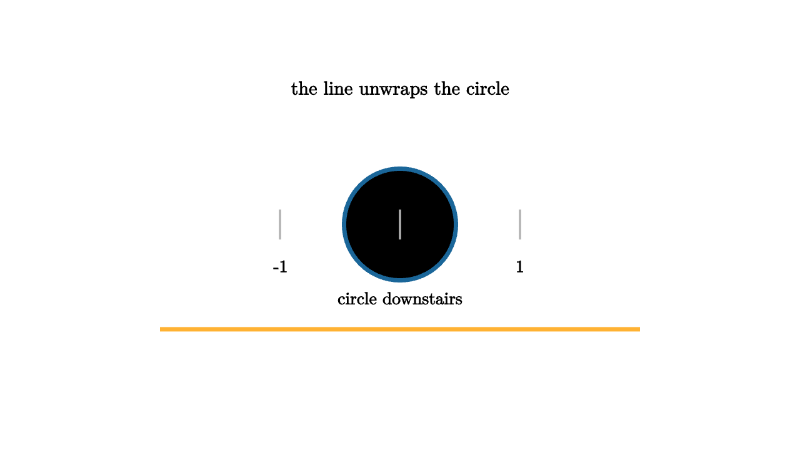

Covering Spaces and Lifted Motion
A covering space is a controlled way to unwrap a space. The circle can be covered by the real line using the map that sends a number t to the point at angle t. Locally, the map looks like a perfect copy. Every small arc of the circle has many disjoint arc copies upstairs on the line. Globally, the copies stack forever.
This turns winding into vertical displacement. A loop around the circle starts at one chosen lift upstairs. When the loop finishes downstairs, the lifted path may end at a different copy of the starting point. One counterclockwise turn moves from t to t plus one full revolution. Two turns move two copies away. That displacement is the integer.

source
let Tick = |x, label| [
stroke{LIGHT_GRAY, 2} Line([x, -0.15, 0], [x, 0.15, 0]),
center{[x, -0.42, 0]} Text(label, 0.62)
]
mesh scene = [
center{1.35u} Text("the line unwraps the circle", 0.68),
stroke{BLUE, 4} Circle(0.56),
center{0.74d} Text("circle downstairs", 0.62),
stroke{ORANGE, 4} Polyline([[-2.4, -1.05, 0], [-1.2, -1.05, 0], [0, -1.05, 0], [1.2, -1.05, 0], [2.4, -1.05, 0]]),
Tick(-1.2, "-1"),
Tick(0, "0"),
Tick(1.2, "1")
]Covering spaces are useful because path lifting is unique once the starting lift is chosen. You can watch a complicated path downstairs by following a single path upstairs. If it returns to its starting lift, the downstairs loop is algebraically trivial for that cover. If it lands on another sheet, the loop has activated a deck transformation, a symmetry of the cover over the base.
This language is the gateway to monodromy. In complex analysis, when you continue a square root around the origin, the value changes sign. The base space is the punctured plane. The cover holds the two possible square-root branches. One loop around the missing point swaps the sheets. Algebraically, the loop acts on a fiber.
source
let Downstairs = |t| [
stroke{BLUE, 3} Circle(0.52),
center{[0.95 * cos(TAU * t), 0.95 * sin(TAU * t), 0]} fill{WHITE} stroke{BLUE, 2} Circle(0.08),
center{0.82d} Text("base loop", 0.62)
]
let Upstairs = |t| [
stroke{ORANGE, 4} Polyline([[-1.9, -1.1, 0], [1.9, -1.1, 0]]),
center{[-1.8 + 3.6 * t, 0.25 * sin(TAU * t) - 1.1, 0]} fill{WHITE} stroke{ORANGE, 2} Circle(0.08),
center{1.45d} Text("lift records displacement", 0.62)
]
"Cover"
mesh title = center{1.35u} Text("lifted paths end on sheets", 0.68)
mesh downstairs = Downstairs(0.2)
mesh upstairs = Upstairs(0.2)
play Fade(0.8)
"Move"
downstairs = Downstairs(1)
upstairs = Upstairs(1)
play Lerp(1.4)Coverings also explain why the fundamental group deserves to be a group rather than a bag of loop types. Loops act on the fiber over a basepoint. Composition of loops becomes composition of permutations. The identity loop fixes everything. Reversing a loop gives the inverse action. A geometric operation becomes an algebraic representation.
The universal cover is the largest unwrapping for a nice enough connected space. It is simply connected, meaning every loop can be collapsed. The fundamental group of the base then appears as the deck transformation group of this universal cover. For the circle, the real line is the universal cover, and integer translations are deck transformations. For a torus, the plane covers it, and the deck transformations are translations by the integer lattice.
This perspective has modern uses. In graphics and geometry processing, cuts and covers let algorithms flatten surfaces while tracking seams. In robotics, lifting paths can simplify planning on periodic coordinates. In physics, covering spaces clarify phase, spin, and multivalued states. In every case, the same lesson appears: if motion downstairs is confusing, move upstairs to a space where motion is easier, then measure how the endpoint changed.
The algebraic eye sees a loop as an operator. It does something to sheets, branches, or lifted endpoints. That action is often easier to compute than the original deformation class, and it keeps the topology honest.